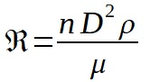
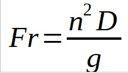
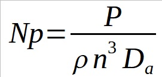
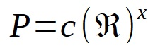
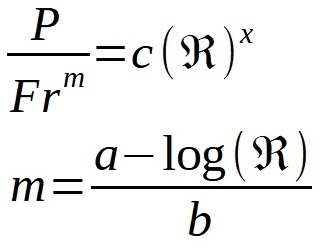
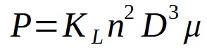
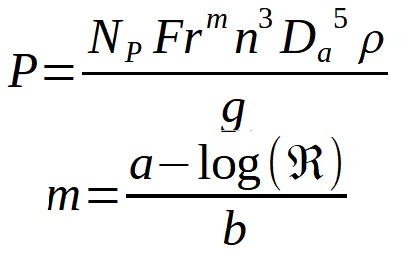
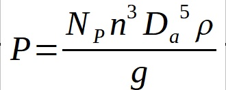
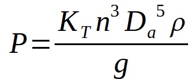

Agitación y mezcla
Consumo de potencia de un agitador
Consideraciones generales
Para poder diseñar un agitador se deben tener en cuenta las siguientes variables. las cuales afectaran y determinaran las necesidades y objetivos particulares de la operación:
- Variables relacionadas con el líquido, (densidad y viscosidad)
- Tipo de impulsor
- Velocidad del impulsor (N)
- Si posee placas deflectoras
- Proporciones del tanque
Para conocer la potencia requerida para hacer girar un determinado impulsor con una velocidad determinada, se utilizan correlaciones empíricas de la potencia (N° de potencia) en función de otras variables del sistema.
La forma general de estas correlaciones pueden obtenerse mediante el análisis dimensional, en función de las medidas de los elementos que componen el agitador.
Relaciones dimensionales en un agitador tipo turbina
| Relación | Proporción |
|---|---|
| Da/Dt | 1/3 |
| E/Dt | 1/3 |
| L/Da | 1/4 |
| W/Da | 1/5 |
| J/Dt | 1/12 |
| H/Dt | 1 |
Las dimensiones lineales del sistema pueden convertirse en magnitudes adimensionales llamadas "Factores de forma", dividiendo cada uno de los términos por uno de ellos que se toma como base
| N° adimensional | Relación |
|---|---|
| S1 | Da/Dt |
| S2 | E/Da |
| S3 | L/Da |
| S4 | W/Da |
| S5 | J/Dt |
| S6 | H/Dt |
Dos sistemas son geométricamente semejantes cuando tienen iguales factores de forma, aunque difieran en tamaño.
Cálculo de potencia en el agitador
La potencia consumida por un agitador se puede conocer a través de números adimensionales, relacionando por medio de gráficos, el número de Reynolds y el número de potencia. Estos gráficos van a depender de las características geométricas del agitador y de la presencia o no de placas deflectoras.
Número de Reynolds (Re)
El número de Reynolds es una expresión adimensional que permite caracterixzar el movimiento de un fluido. Relaciona densidad, viscosidad del fluido, diámetro y velocidad periférica del impulsor.

Donde:
- n = velocidad de rotación [rps]
- D = Diámetro del agitador [m]
- ρ = Densidad del fluido [kg/m3]
- μ = Viscosidad [Pa s]
El valor del número de Reynolds define si el carácter del fluido es turbulento o laminar. Además se considera que el paso entre el régimen laminar y el turbulento no es inmediato, pasando por una zona de transición. Se define de la siguiente manera:
- Régimen laminar: Re < 10
- Régimen transitorio: 300 < Re < 10000
- Régimen turbulento: Re > 10000
Número de Froude (Fr)
El número de Froude es una medida que relaciona la fuerza de inercia y la fuerza gravitacional por unidad de área que actua sobre el fluido. Se utiliza en el cálculo del consumo de potencia cuando el fluido del tanque genera un movimiento de ondas a causa de la falta de placas deflectoras.

Donde g es 9,8 m/s2
Número de potencia (Np)
El número de potencia es análogo al factor de
fricción o al coeficiente de arrastre, siendo
proporcional a la relaci'on entre la fuerza de
rozamiento que actúa sobre una unidad de área del
impulsor y la fuerza de inercia. Cuando el estanque
contiene placas deflectoras, el Np tiene una buena
correlación con el número de Reynolds.
Cuando Existe régimen turbulento, Np tiene valor
constante.

Donde P es la Potencia de agitación del impulsor [W]
Se pueden distinguir los siguientes casos:
| Tanque con placas deflectoras | Tanques sin placas deflectoras |
|---|---|
 |
 a y b corresponden a datos empiricos, el número de Froude aparece en la ecuación debido ala formación de vórtices. |
Consumo de potencia
Para n° de Re < 10, con o sin placas deflectoras.
Para números bajos de Reynolds las curvas de NP y NRe coinciden para un tanque con o sin placas deflectoras. En este intervalo el flujo es laminar y la densidad no influye. La ecuación de potencia es la siguiente:

| Impulsor | KL |
|---|---|
| Helice paso cuadrado 3 palas | 41 |
| Turbina paso de 2, 3 palas | 43,5 |
| Turbina 6 palas planas | 71 |
| Turbina 6 palas curvas | 70 |
| Turbina de ventilador, 6 palas | 70 |
| Turbina 2 palas planas | 36,5 |
| Turbina cerrada 6 palas curvas | 97,2 |
Para n° de Re > 300 sin placas deflectoras.
En esta región los números de Reynolds, que habitualmente se evita en la práctica cuando se utilizan tanques sin placas deflectoras, se forma un vórtice y tiene influencia el número de Froude. Es por eso, que en la ecuación se transforma en:

| n | Figura | Linea | a | b |
|---|---|---|---|---|
| 2 | Turbina de 6 palas | D | 1 | 40 |
| 3 | Helice de 3 palas | B | 1,7 | 18 |
| 3 | Helice de 3 palas | C | 0 | 18 |
| 3 | Helice de 3 palas | D | 2,3 | 18 |
Para n° de Re > 300 con placas deflectoras

Para número de Re > 10000 con placas deflectoras.
En este caso el NP es independiente del
Reynolds, la viscosidad no influye en el sistema.
En este intervalo es flujo es totalmente turbulento y
NP se vuelve constante. La ecuación se
transforma en:

Donde:
| Impulsor | KT |
|---|---|
| Helice paso cuadrado 3 palas | 0,32 |
| Helice paso de 2, 3 palas | 1 |
| Turbina 6 palas planas | 6,3 |
| Turbina 6 palas curvas | 4,8 |
| Turbina de ventilador, 6 palas | 1,65 |
| Turbina 2 palas planas | 1,7 |
| Turbina cerrada 6 palas curvas | 1,08 |
Una vez obtenida la potencia necesaria para nuestro agitador, se debe tener en cuenta que la misma es la necesaria para impartir movimiento al fluido, no es la potencia del motor que se utilizara, existiendo perdidas energéticas de hasta 50% en el peor de los casos. Por lo cual la potencia que debe poseer el motor a implementar se puede obtener de la siguiente manera: